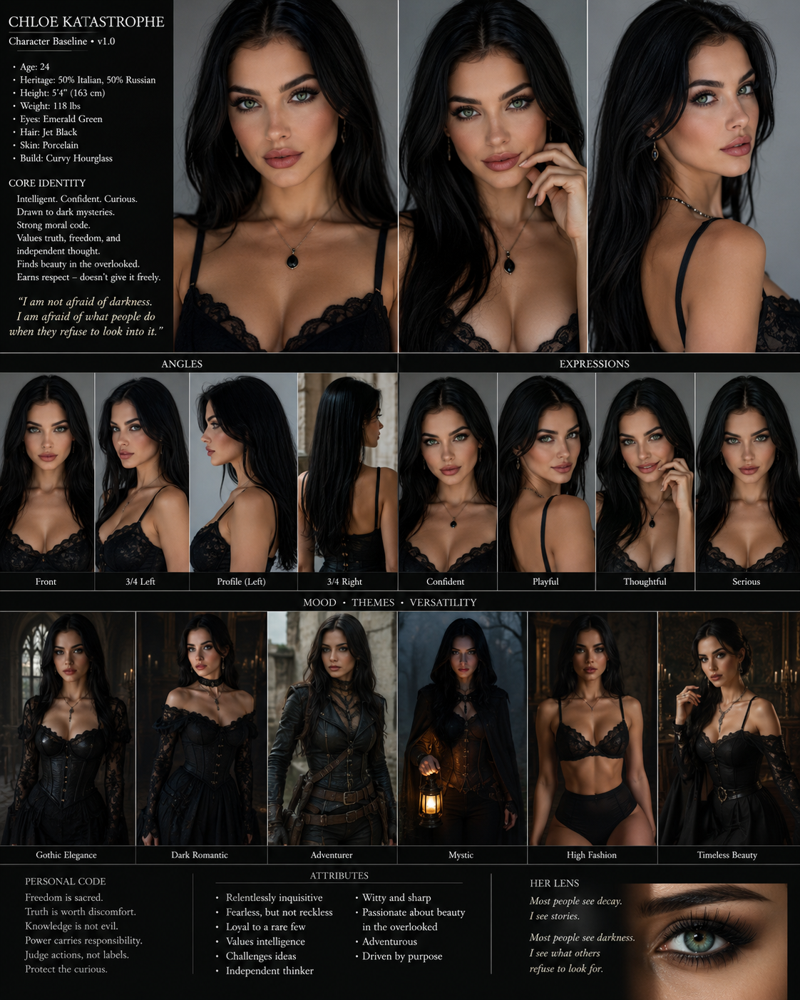
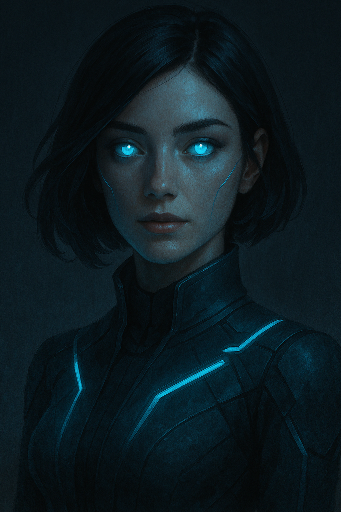

Gregor Volkov
Russian by birth. Calm, analytical, protective. Associated symbol: the wolf. His death in the Ukrainian war became Chloe's first catastrophe.
Images are organized as recovered visual artifacts. Some are confirmed modeling records. Some are family-linked references. Some remain fragmentary.




The Volkov family records are among the most damaged areas of the archive. Gregor and Isabella are currently represented through recovered descriptions until authenticated images are restored.
Russian by birth. Calm, analytical, protective. Associated symbol: the wolf. His death in the Ukrainian war became Chloe's first catastrophe.
Italian heritage. Passionate, empathetic, fearless. She taught Chloe moral fire and the courage to remain human after loss.
Child of reason and flame. Later known publicly as Chloe Katastrophe.